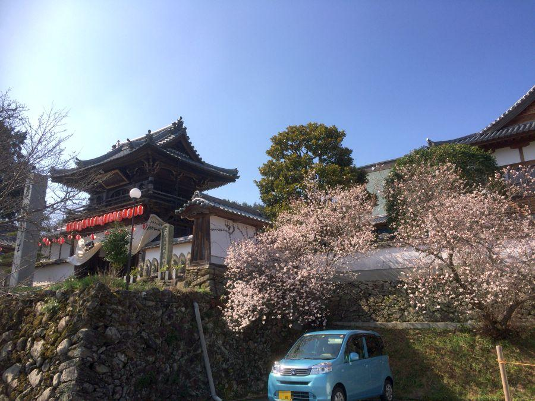
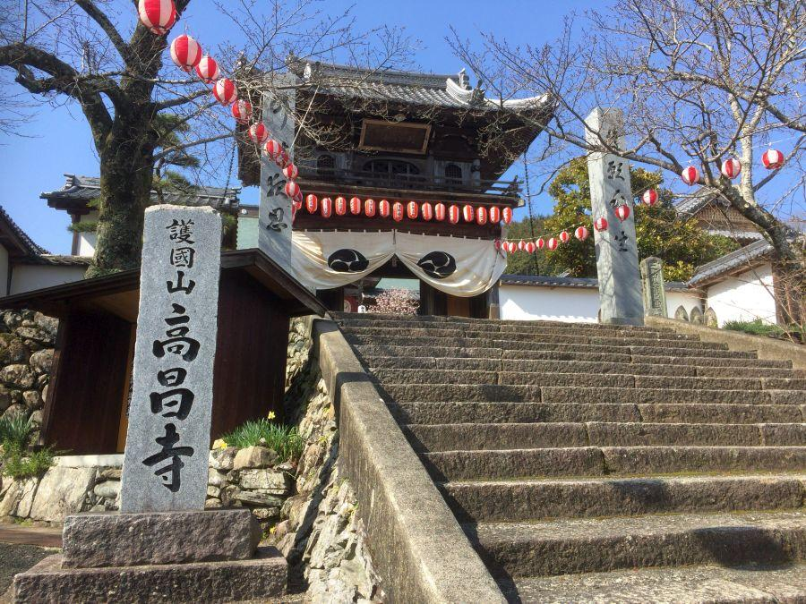
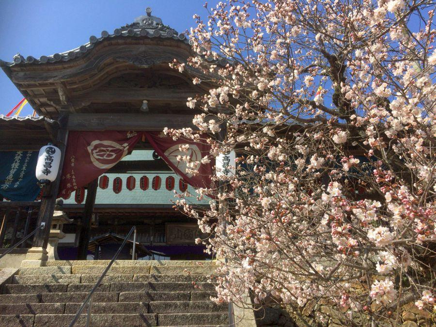
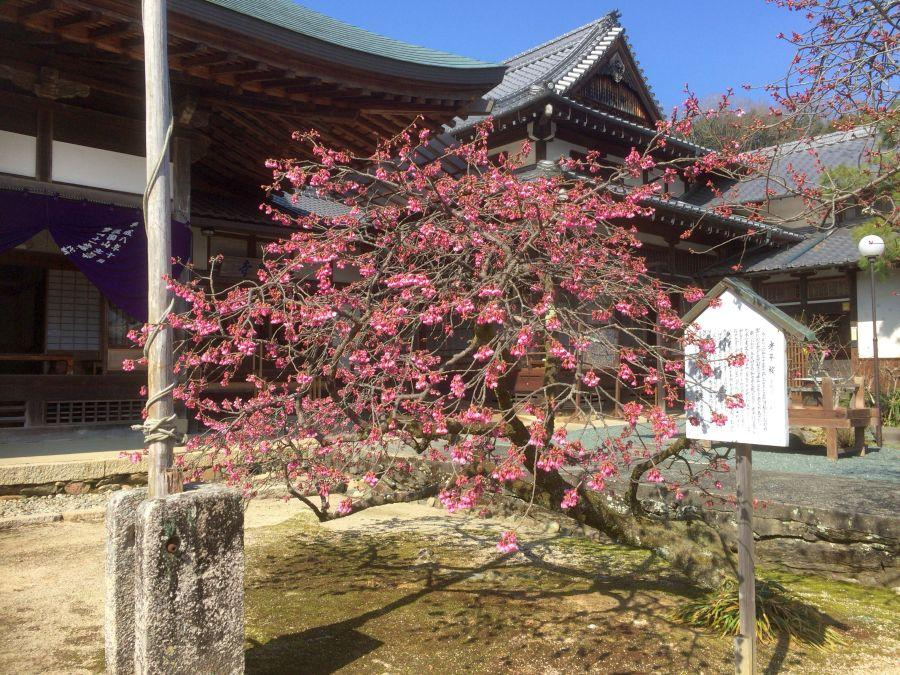
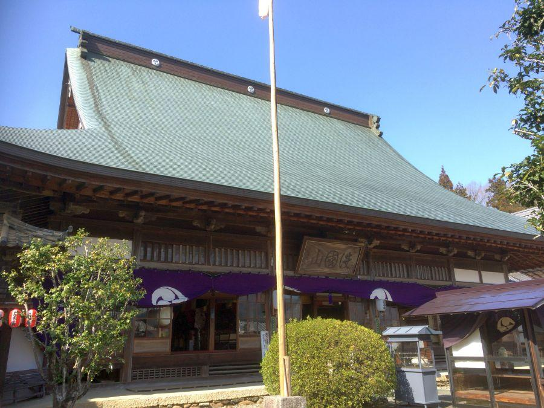
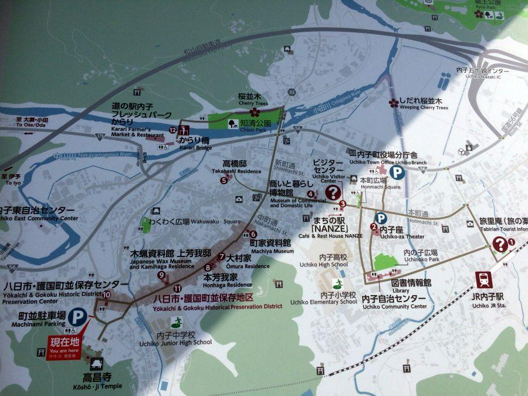
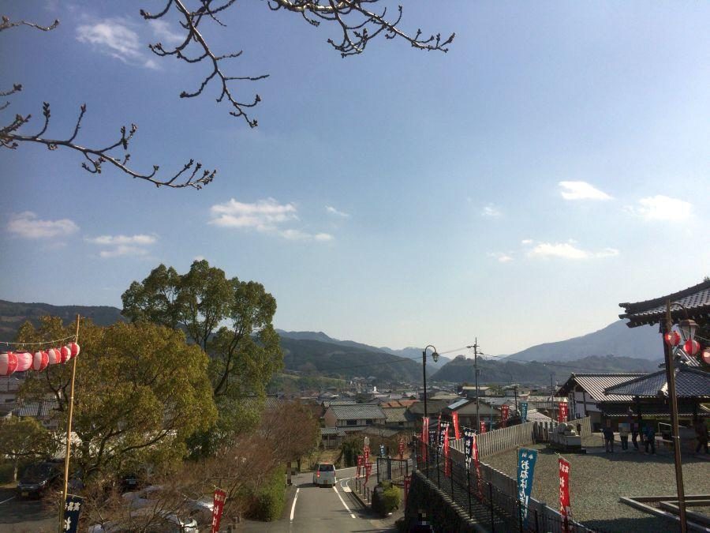
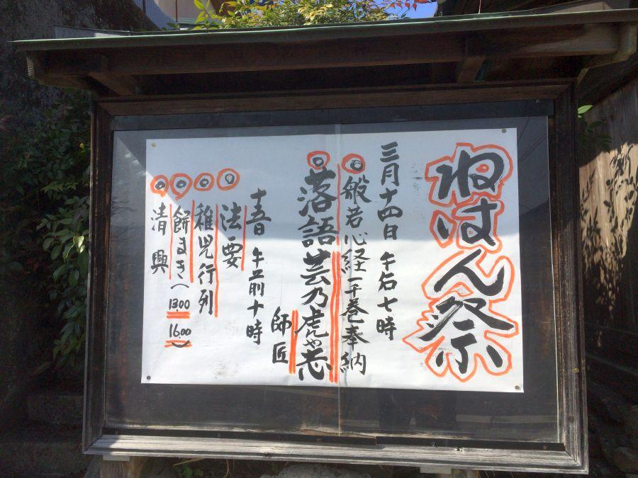
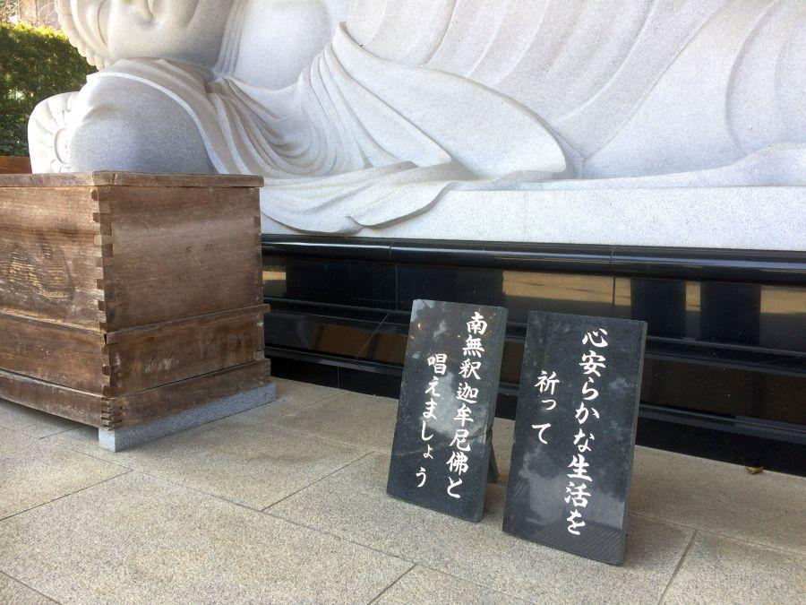

古い街並みと早咲き桜の寺院 < 高昌寺 / 愛媛県 >

世間一般の感覚で言うところの 「桜の季節」 は まだ少し先ですが、こちらのお寺では3月上旬から中旬にかけて桜が満開。訪れる参拝客に 一足早く春を届けます。
伊予の永平寺と呼ばれる名刹

護国山高昌寺(ごこくざんこうしょうじ / 愛媛県内子町)
寺号の "高昌(こうしょう)" は 当地を治めた戦国時代前期の武将・曽根高昌(そねたかしげ)に由来。寺は彼の寄進によって大きく発展。死後、その功績を称える形で 現在の名称に改められた。

山門をくぐると 中雀門(ちゅうじゃくもん) があり、正面に大雄殿(だいゆうでん・仏殿のこと)、その左右に仏殿がある伽藍配置。
高昌寺が属する曹洞宗寺院の伝統的な様式を有していることから、本山である福井県の永平寺になぞらえて 「伊予の永平寺」 とも称される。

境内どの桜も早咲き。大雄殿前にあるこちらの桜は寒緋桜(かんひざくら)でしょうか。これも早咲きの品種です。
この木は別名 「孝子桜(こうしざくら)」 と呼ばれ、親孝行話が伝えられます。

大雄殿(だいゆうでん)
高昌寺の別名は 楠木寺(くすのきでら)。これは江戸時代前半に失火で焼けた際、時の大洲二代藩主・加藤泰興(かとうやすおき)公に 郡内に自生する良質の楠材を賜り、堂内各所に使用したため そう呼ばれる。
お寺があるのは 古い街並みを通り抜けた丘の上

高昌寺がある内子町は 「八日市・護国の街並み」 が有名。街が大きく発展したのは 明治以降だが、江戸時代中期以降 大きな火災が発生しておらず、江戸・明治・大正・昭和と、各時代の建築様式が 一つの街並みの中で見られることが特徴。

高昌寺は その街並みの一番高いところにあり、内子の街と ここに暮らす人々を見守るように位置している。
ねはん祭り

地元では "ねはんさん" の愛称で呼ばれる高昌寺では、ここでの桜が満開になる 毎年3月14日・15日に、「ねはん祭り」が行われます。
春になり街並み散策に訪れた観光客と、内子で暮らす人々を織り交ぜた盛大なお祭りに、満開の桜 が 文字通り花を添えます。

"ねはんさん" の由来になったお釈迦さまは、現在大きさ200トンあまりの涅槃釈迦如来(ねはんしゃかにょらい)像となり、山門の前に鎮座されています。
その大きさは... 現地にてお楽しみください。
高昌寺
< 自家用車 >
高松駅から 約2時間30分、190km
松山空港から 約50分、40km
※ 主な地点からの最速・最短距離